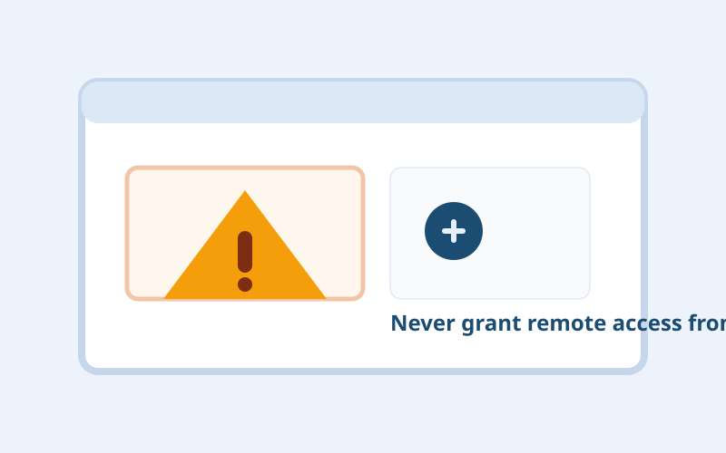

In plain words
Fake Tech Support Scams explained simply: what it looks like, the warning signs, and the safest next step if it happens to you.
What this is
Fake support scams claim your device has malware and direct you to call “support” or install remote tools. Attackers then charge for fake fixes or steal data directly.
How it works
- A browser pop-up says your system is infected.
- You call a number or chat with a fake technician.
- They ask to install remote control software.
- They view files, set persistence, or demand payment.
Why people fall for it
- Security warnings trigger fear and fast compliance.
- Technical language can intimidate non-experts.
- The scam appears to offer immediate relief from a scary issue.
Warning signs
- Full-screen browser alerts with loud warnings.
- Requests to keep remote session open during payment.
- Pressure to pay in gift cards, crypto, or wire transfer.
- Claims that legal action will occur if you disconnect.
Example scenario
A pop-up locks your screen with an alarming message and a toll-free number. The “agent” asks for remote access, then opens event logs as fake proof of compromise.
What to do if it happens
- Disconnect the device from the internet if remote access was granted.
- Uninstall remote tools and run trusted security scans.
- Change sensitive passwords from a clean device.
- Dispute fraudulent charges and report the scam.
How to reduce risk next time
- Only seek support from official vendor websites.
- Teach household members that browser pop-ups are not support channels.
- Keep backups to reduce panic during real incidents.
Quick reminder: You do not need proof that something is fake before you pause. One credible red flag is enough to stop and verify.